apartment (1600-after): 0 changed pixels, maximum channel difference 0/255


The game now loads a reduced GLB for the sealed apartment. The full city stays in the authoring files. No texture resolution, fog, view distance, shadow quality, or model detail was reduced.
930 → 731 loaded mesh nodes (−21.4%); 38,142 → 32,649 instantiated triangles (−14.4%). The corridor/stairwell's 138 nodes are absent. The GLB is 6,820,564 bytes instead of 6,966,244 (−2.1%); all 78 images remain shared by visible objects. These are asset counts and file sizes, not a browser-memory measurement.
A conservative, precomputed union of views through all four windows over the player's standing/jumping volume. Opaque wall occlusion removes fully blocked objects. Necessary off-screen sun-shadow casters remain. Retained vertex/index/texture bytes and material definitions are unchanged, verified by automated tests. Bevy still performs camera frustum culling. Assets are not loaded and unloaded on every camera turn.
The closed door and apartment collision shell remain. Three corridor light sources are retained because removing them changes the warm seam around the door. The corridor meshes, stairs and fixtures are not loaded. Door opening and corridor gameplay remain deferred.
Chromium 154 / hardware WebGPU on Intel Iris Xe (gen-12lp), unchanged rendering settings. Whole-window frame acquisition counts include stalls. The 1600×900 runs sample each view for 8 seconds; the 3073×1920 runs use two 15-second samples per view plus a baseline repeat after the candidate run (three baseline samples and two candidate samples pooled below). Edge-camera runs use one-second samples for visual checking only and are excluded from this FPS table. Warm-up precedes every sample; no builds run during measurement.
| Render size | View | Before FPS | After FPS | Observed change |
|---|---|---|---|---|
| 1600×900 | apartment | 21.23 | 21.24 | +0.0% |
| 1600×900 | entrance-wall | 21.44 | 22.36 | +4.3% |
| 1600×900 | east-window | 23.82 | 24.36 | +2.3% |
| 1600×900 | bedroom-window | 20.74 | 20.46 | -1.3% |
| 1600×900 | court-from-window | 15.49 | 15.62 | +0.8% |
| 3073×1920 | apartment | 9.51 | 10.73 | +12.9% |
| 3073×1920 | court-from-window | 6.04 | 6.40 | +5.9% |
Geometry removal does not deliver a large FPS gain here. Small differences vary across samples; lighting and shadow lookups remain the main cost. A trial removing the corridor lights improved speed substantially, but was rejected because it changed the door seam. Its gains are not claimed for the shipped version.
Before/after screenshots below include ordinary room views, every window, window-edge angles, and bathroom jump height. Exact differences are disclosed rather than calling every frame pixel-identical. Review cameras outside the apartment intentionally see missing scenery and are not valid views for this confined-player export.
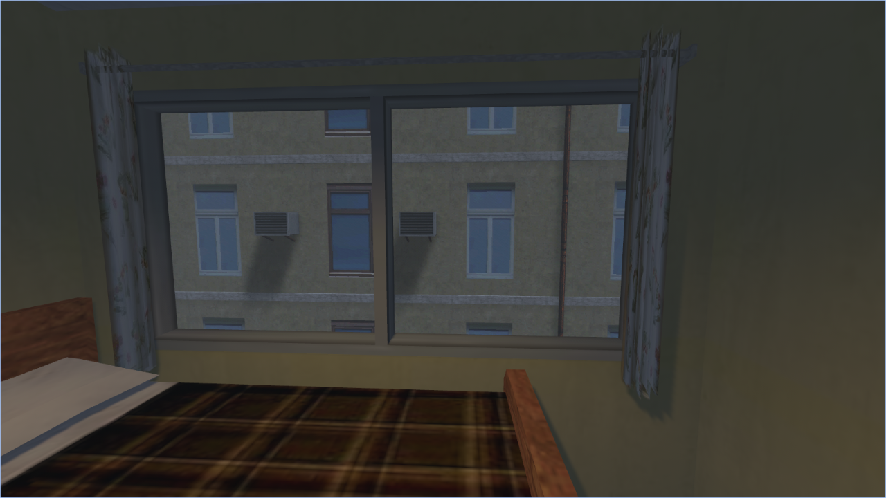
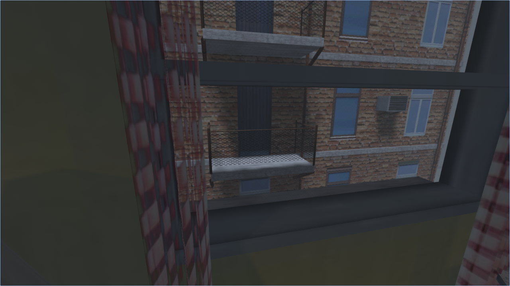


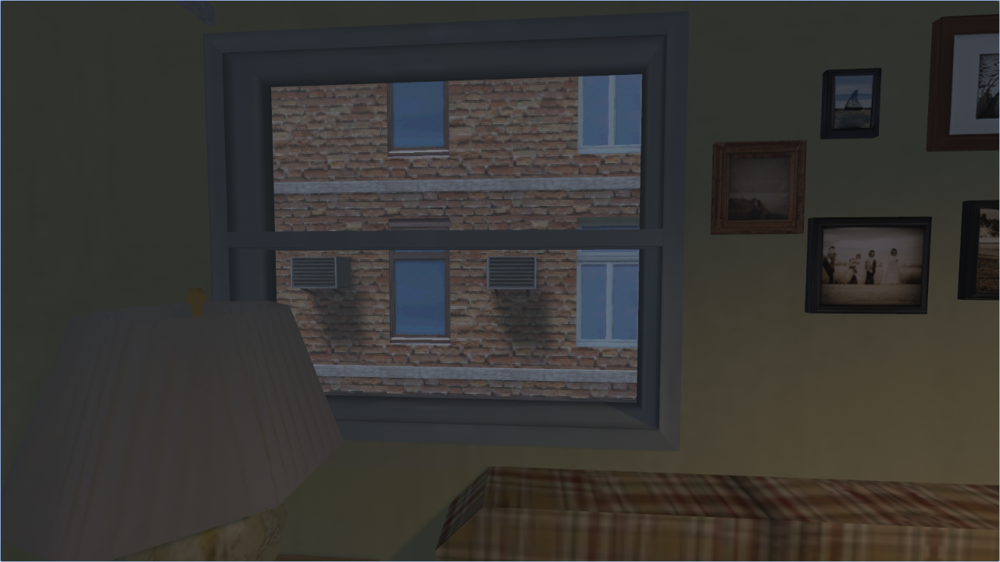


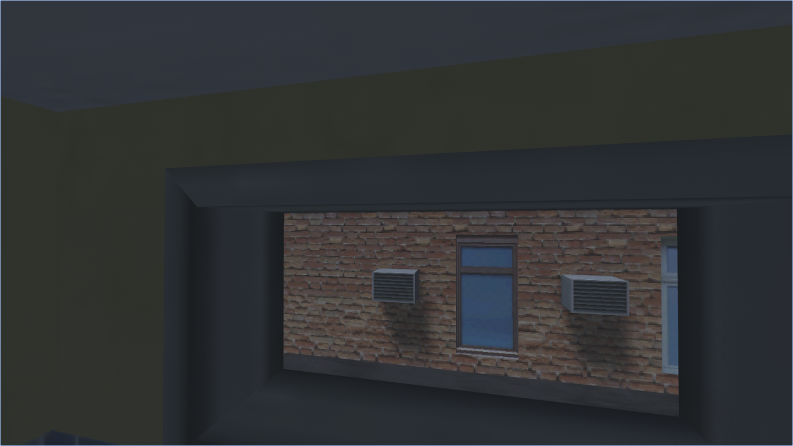

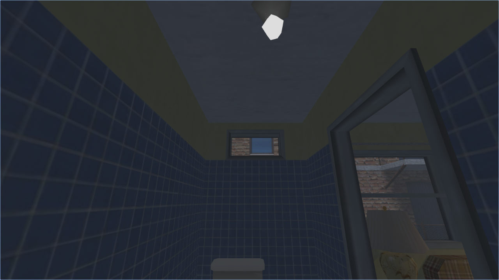
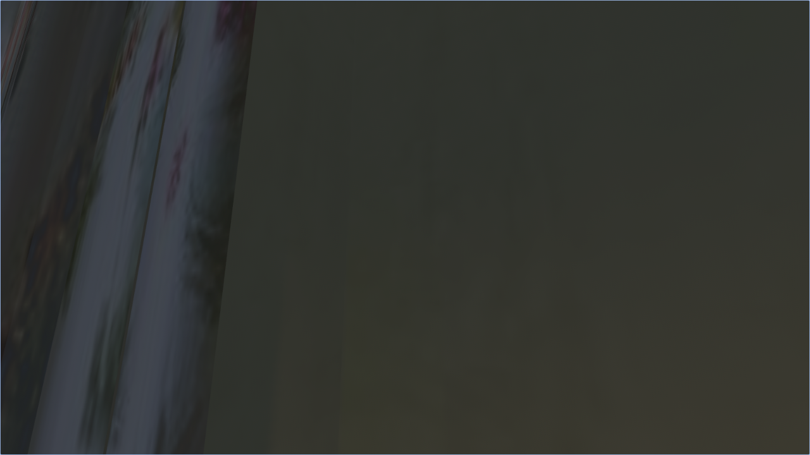

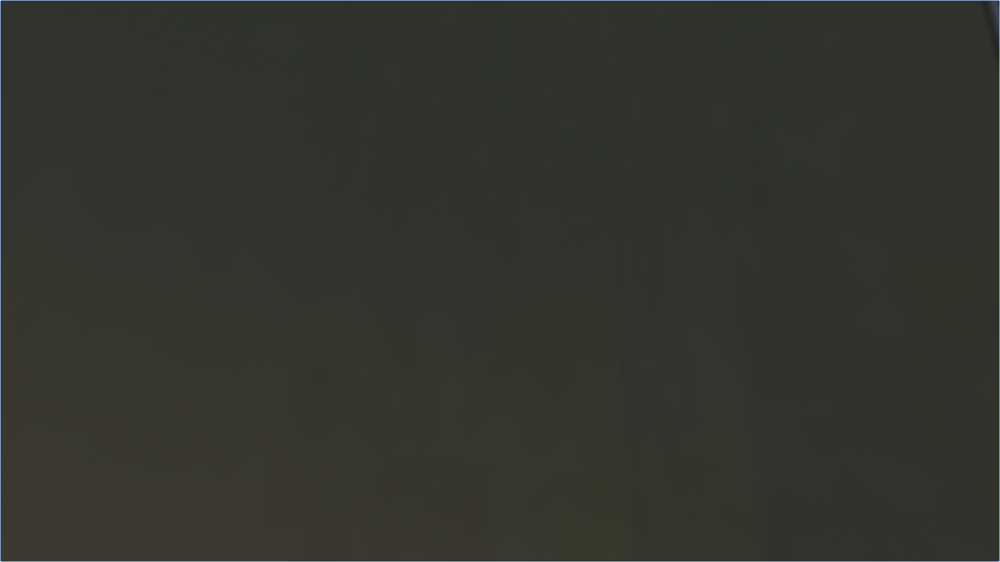


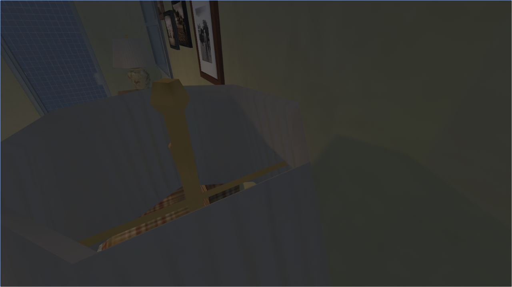

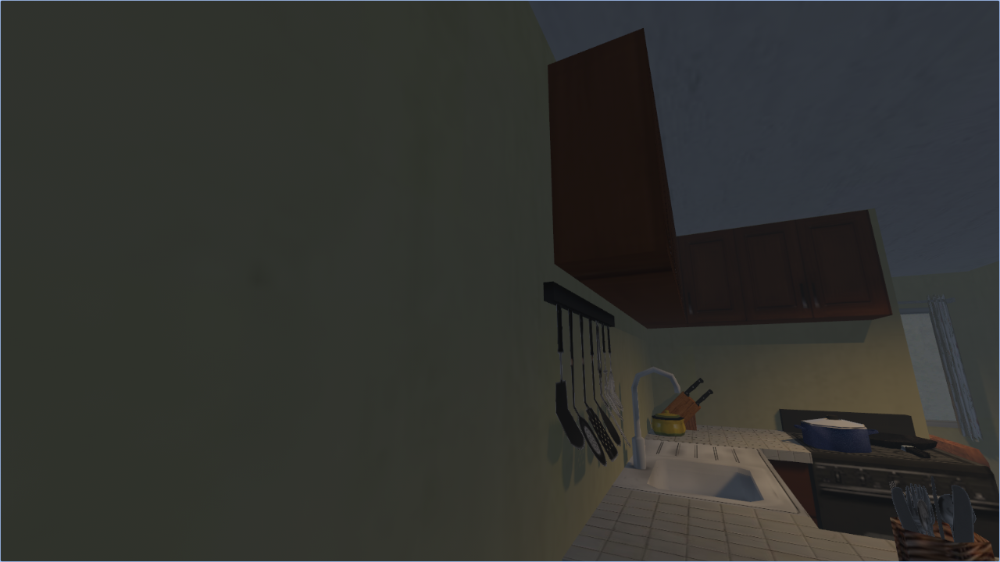
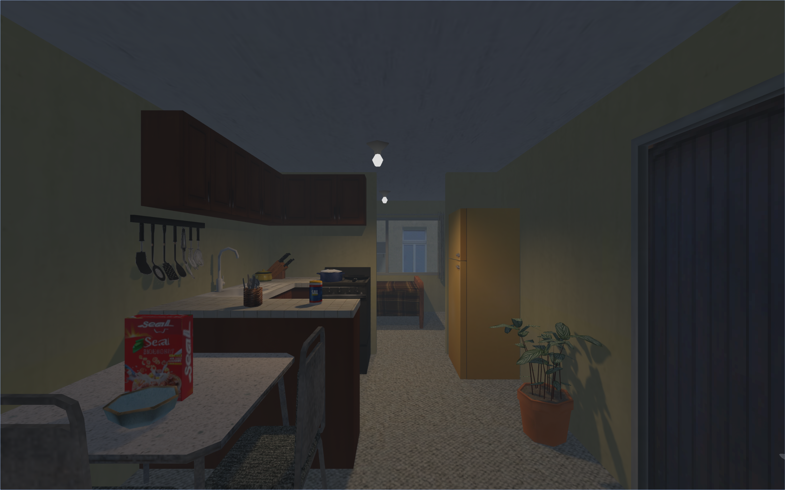

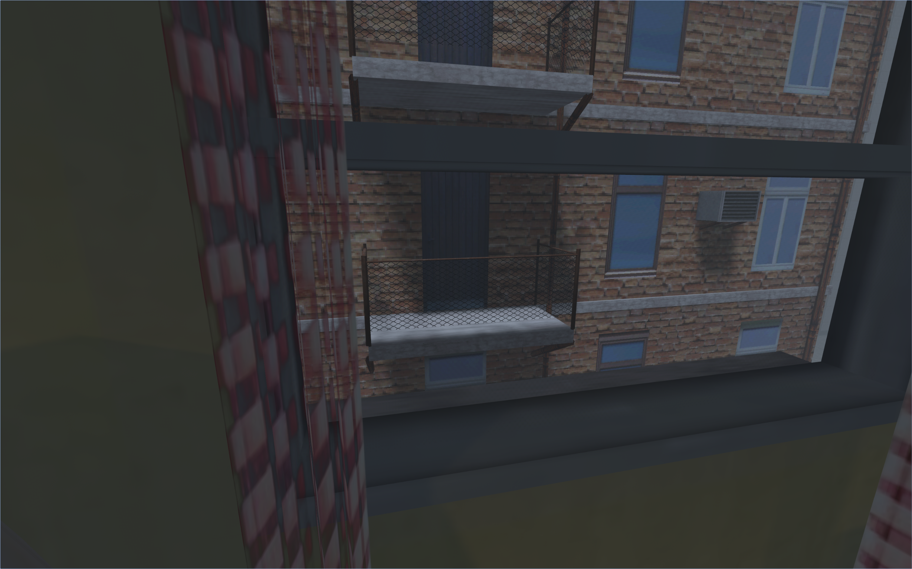
Rust formatting/check and all four gameplay tests pass. Four Python tests verify portal coverage, conservative occlusion, opaque-quad detection, and byte/material preservation. Both browser builds passed pointer-lock, movement, jump, turn, menu and restart checks. Network logs show the final build fetching apartment_windows.glb, not apartment_city.glb.
Rebuild using tools/build-web.sh --features scene-review. Compare frozen full-city and reduced builds with tools/benchmark-web.cjs OUTPUT URL. Set VIEWS=apartment,entrance-wall,east-window,bedroom-window,court-from-window SAMPLE_MS=8000 for standard views. For the display-size test use VIEWPORT_WIDTH=2458 VIEWPORT_HEIGHT=1536 VIEWS=apartment,court-from-window ROUNDS=2 SAMPLE_MS=15000. Record the actual canvas size, since OS scaling changes it.
The visibility export assumes the current closed shell, fixed sunlight and player bounds. Rebuild/revalidate it before changing those or allowing the player outside. Full Blender scene regeneration and another browser/GPU were not tested this pass.